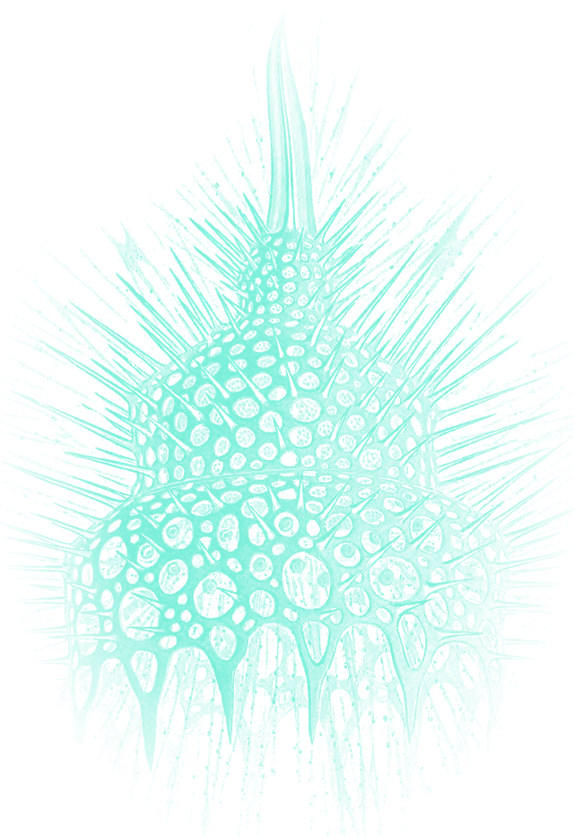
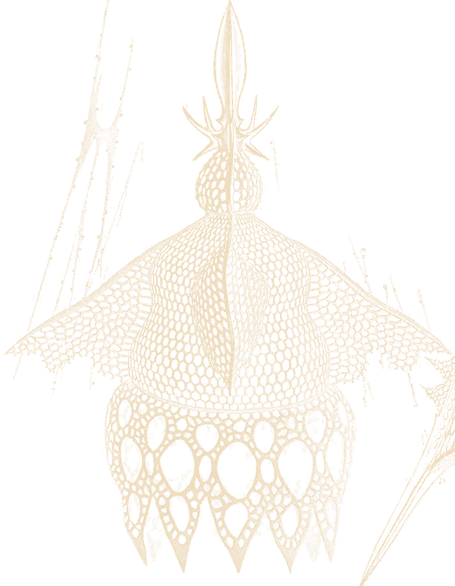
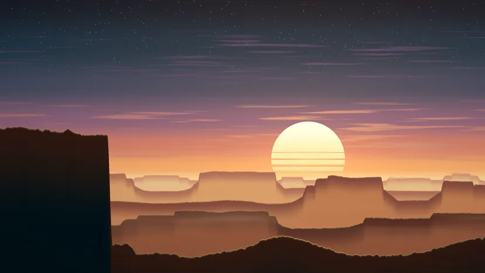

Procedural matte paintings in the manner of 1970s airbrush covers: OKLab gradients, flat-topped mesas with rim light, banded sun, fine spatter grain. First light is the hero; Blue hour is the same world later, a CC0 stone drifting over a salt mirror. Each ships in AVIF / WebP / JPEG at 828, 1280, 1920 and 2560, plus 9:14 portrait crops for phones.
The mark is the banded sun of the paintings sitting over a terminal underscore: a horizon and a prompt. The cursor blinks at 530 ms in motion; it is still everywhere else. Wordmark: Newsreader at display optical size, with AS in wide Martian Mono.
brand/mark.svgmark.svg on bonebrand/mark-mono.svg (currentColor) · cursor blinking
Warm earth tones (umber, terracotta, ochre, sand, bone) against a night built on the seed hue, 180° in OKLCH: deep teal for ground, verdigris for calm accents, phosphor for anything electric (boot text, cursor, scanline). Phosphor is used sparingly, never for body text on light grounds.
The dawn ramp, interpolated in OKLCH: dusk-teal → mauve → terracotta → ochre → sand. Every gradient in the paintings follows it.
04 · Type
Editorial gravitas, terminal timing.
Display · Newsreader 330 · opsz 72Email for AI agents.
Italic · Newsreader 360A fill-in-the-blanks word game, built at 17.
Body · Newsreader 400 · opsz 16One MCP URL that gives an agent every tool. Albretsen AS builds whatever is profitable: apps, SaaS and infrastructure for AI agents, and takes one outside engagement at a time.
The real logo, unchanged, carried by the sun in a painting of its own. The hour encodes status: live products are up (MCP Emails at sunrise, Fun Libs at noon), Toolrails is building and cresting the ridge, Harbor is paused at blue hour. Retired products are specimens from Haeckel's plate of radiolarians: precise, finished, kept in the archive.
Retired
Luma keeps its real logo on a set sun. The rest have no surviving brand assets, so each gets a specimen.
06 · Extras
Texture, ephemera, specimens.

extras/signal-phosphor.webp (+ signal-sand) · Haeckel, Tafel 31 · the electric specimen

extras/plate-frame.svg around specimen-b-sand.webp
extras/horizon-{dawn,noon,dusk,night}.webp · 2400×220 section dividers, 5–8 KB each
07 · Interactive
The raster rises into mesas.
Drift Field (canvas 2D, no dependencies): CRT scanlines in perspective, displaced by terraced simplex noise so each line becomes a ridge. Power-on, hour and pointer are all live. Drift Stone (three.js): Poly Haven's CC0 Rock 09, stood upright and shaded with a painted ramp instead of PBR, with a raster scan-in.
assets/3d/drift-stone.glb (398 KB: geometry + 512 px normal and AO) and drift-stone.js. Transparent canvas, so it floats over either painting. boot(0..1) scans it in top-down with a phosphor edge; setDusk(0..1) moves the light from ochre to verdigris. Loaded only when this section is near the viewport.
08 · Motion study
Four moves, one beat.
The rhythm unit is a 120 ms beat. Everything snaps to it, so the motion reads as a machine doing its checks, calm and certain, not as decoration.
01 · Decode
Text scrambles through terminal glyphs and resolves left to right on the beat. For the masthead, section labels and the MCP command.
MCP Emails · 17 tools · about 100 email providers
02 · Warm boot
A POST log types and decodes to OK, collapses to one line at the horizon, and the landscape rises out of that line. See the top of this page.
03 · Power on (CSS)

04 · Horizon drift
Scroll scrubs the hour: the paintings cross-fade dawn to blue hour and the Drift Field re-tints. ScrollTrigger, scrub 0.8. Demonstrated in the pinned section after the hero images.